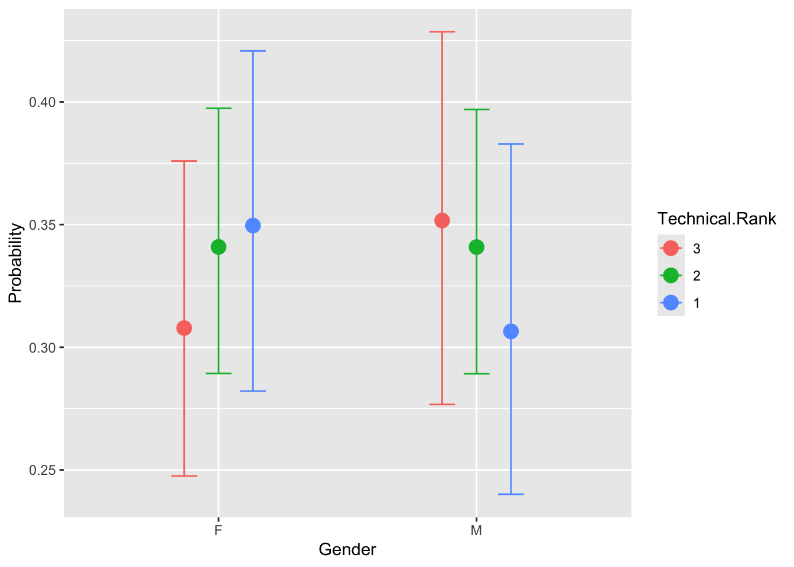
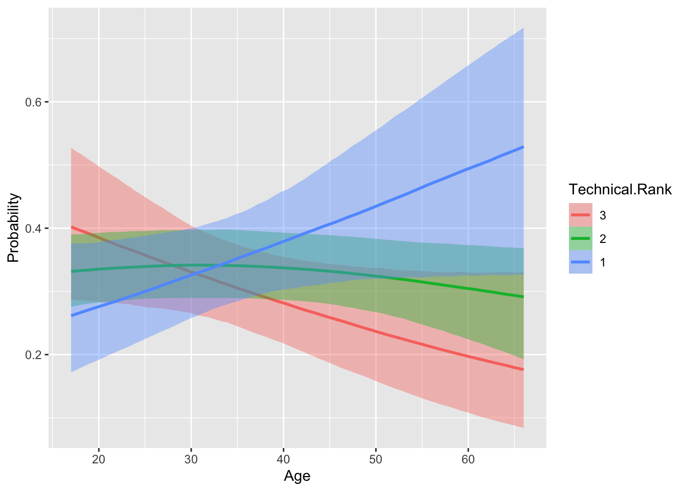

If you are fitting a model, display the model output in a neatly formatted table. (The tidy and kable functions can help!)
If you are creating a plot, use clear labels for all axes, titles, etc.
If you are using Github, don’t forget to commit and push your work to to it regularly, at least after each exercise. Write short and informative commit messages. Else, if you are submitting on Canvas, make sure that the version you submit is the latest, and that it runs/knits without any errors.
When you’re done, we should be able to knit the final version of the QMD in your GitHub as a HTML.
Lab
The data for this week’s lab is taken from the Great British Bake-off (GBBO, https://bakeoff.netlify.app/). In this lab you will be looking at Gender and Age as a predictor of technical rank. For this exercise, we will only be looking at those who were in top 3 of technical.
In the GBBO, the bakers are usually provided with a list of ingredients and basic instructions, but they may not have access to specific measurements or details on how to prepare the ingredients. The judges evaluate the bakers’ finished products based on factors such as appearance, texture, and flavor, but also compare the bakers’ results to a standard version of the recipe that has been prepared in advance by the judges or a baking expert.
Make sure only the top 3 ranks are being used. For some reason, there are missing ranks (my guess is they did not announce rank on TV)
Code
gbbo <-read_csv("https://raw.githubusercontent.com/suyoghc/PSY-504_Spring-2025/refs/heads/main/Ordinal%20Regression/data/GBBO.csv")# Enter code to filter. Think about the data type that would be relevant for Rankgb <-filter(gbbo, gbbo$`Technical Rank`<4)
Explore
Plot two figures showing the percentage of bakers in each rank— create one for Gender and Age
[1] F M M F M F M F F M F F M F F M F M M M M M F F F M F F F M F F F F F F F
[38] F F M M F F M M F F M M F F M F M M F F F M M M M M M M M M M M F F M F F
[75] F M M F F F M F F M F F F F M F F F F F F F F F F F F F M F M F M F F M F
[112] F F F F M F F F M F M F M F M M F M M F F F F M F M M F M F F F M F M M F
[149] M M F M F F M M M F M M M M F F F M F F F F F F F M F M M M F F M F M M F
[186] F M F F M F F M F F F F M M M F F M F F M F M F M F F M F F M F F M F F F
[223] M M M M F M M M F M M F F M M F M F F F F F F F F M F M F F F M M M M F M
[260] M F F M F F M F M M F F M F M F F F M F M M F M M M F M M F F M F M M M F
[297] M F M M F F M M F M M F M
Levels: F M
Code
# make sure ordered properly gb$Technical.Rank <-ordered(gb$'Technical Rank', levels=c("3", "2", "1"))head(gb$Technical.Rank) # check to see if ordered
If you haven’t already, convert the outcome variable to an ordered factor. What does the order here represent?
Code
#Outcome variable, 'Technical Rank' is already a factor, the order of which represents placement in the competition, where 1 is first place (best), 2 is second place (runner-up), and 3 is thrid place (second runner-up)
Convert input variables to categorical factors as appropriate.
Code
gb$Gender <-as.factor(gb$Gender)
Run a ordinal logistic regression model against all relevant input variables. Interpret the effects for Gender, Age and Gender*Age (even if they are non-significant).
Code
library(ordinal) # clm function#Model without interactionols1 =clm(Technical.Rank ~ Age + Gender, data=gb, link ="logit")summary(ols1)
formula: Technical.Rank ~ Age + Gender
data: gb
link threshold nobs logLik AIC niter max.grad cond.H
logit flexible 309 -338.86 685.72 3(0) 1.05e-10 2.9e+04
Coefficients:
Estimate Std. Error z value Pr(>|z|)
Age 0.005618 0.009100 0.617 0.537
GenderM -0.190952 0.210607 -0.907 0.365
Threshold coefficients:
Estimate Std. Error z value
3|2 -0.6005 0.3493 -1.719
2|1 0.8048 0.3507 2.295
In the model without an interaction term, age very slightly predicted higher odds of being awarded higher Technical Rank (with 1 being the highest rank), but this was not statistically significant (b = 0.0056, z = 0.617, p = 0.537, OR = 1.006). Gender (i.e., being male relative to being female), non-significantly predicted lower odds of being awarded higher Technical Rank, b = -0.191, z = -0.907, p = 0.365, OR = 0.826.
Test if the interaction is warranted
#Hint: You need to create two models with clm(); one with interaction and one without. #Then you compare them using the anova test using anova()
Code
#Model with interactionols2 =clm(Technical.Rank ~ Age*Gender, data=gb, link ="logit")summary(ols2)
#Model Comparison using Type IIIols_testIII <- car::Anova(ols2, type="III")knitr::kable(ols_testIII)
Df
Chisq
Pr(>Chisq)
Age
1
3.440038
0.0636342
Gender
1
2.918062
0.0875930
Age:Gender
1
4.380814
0.0363456
#Anova seems to be warranted (see above code chunk)
The interaction between Gender and Age significantly correlates with Technical Rank, (b = -0.0388, z = -2.093, p = 0.0363, OR = 0.962), suggesting that as male contestants get older, they have lower odds of being awarded higher Technical Rank.
Use ggemmeans to create a figure showing the interaction between Gender and Age as a function of rank. Plot predicted probabilities from the model.
According to the Brant Test, the proportional odds assumption holds.
brms
Below is a model implementation using the brms package. We will just use the default priors for this. The exercise is to run this code and note your observations. What are salient differences you observe in how the model fitting takes place With respect to the results, how do you compare the results of the model you fit with clm and the one you fit with brms?
The coefficient estimates appear to be roughly the same as those from the clm model (log-odds, not exponentiated). The intercepts are slightly different, but perhaps due to rounding and not some meaningful difference in thresholds. Of the predictors, only the interaction term Age*Gender is statistically significant. The brms output gives us Rhat for each estimate as 1, which indicates convergence. I am not sure what the utility of knowing Rhat is, however.
The conditional_effects function is used to plot predicted probabilities by Gender and Age across each rank.
Code
conditional_effects(ols2_brm, categorical = T)


Code
#I receive a warning that interactions cannot be plotted directly if 'categorical' is TRUE, but I'm assuming we don't want to directly plot the interaction, but instead want to observe it in the plot of the predicted probabilities of each predictor?
check_predictions from the easystatsperformance package is used for examining model fit (i.e., does the data fit the model being used?). Run the below code. What do you think?
# R2 for Generalized Linear Regression
R2: 0.008
adj. R2: 0.005
Check-predictions seem to indicate the model fits the data fairly well, according to the posterior predictive check. Does this process take the place of McFadden’s pseudo-R2 for brms-calculated models? I tried assessing pseudo-r2 for ols2_brm, but was met with an error.